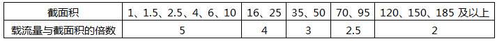

导线载流量估算口诀，并对口诀进行解读，利于大家在工作中快速估算不同截面积的载流量，高效又方便。
与导线载流量有关的因素
与导线截面积有关，也与导线的材料、型号、敷设方法以及环境温度等有关，计算也较复杂。各种导线的载流量通常可以从手册中查找。但利用导线载流量估算口诀再配合一些简单的心算，便可直接算出导线的载流量，比较方便。
导线截面积(mm2)与载流量(A)的粗略倍数关系

导线载流量估算口诀及解释
1、铝芯绝缘线载流量与截面积的倍数关系
10下五，100上二
截面积在10mm2以下，载流量都是截面积数值的5倍。截面积100mm2以上的载流量是截面积数值的2倍。
25、35，四、三界
截面积为25mm2与35mm2的，载流量在4倍和3倍的分界处。
70、95，两倍半
截面积为70mm2、95mm2的，载流量为截面积的2.5倍。
穿管、温度，八、九折
对于穿管敷设(包括槽板等)，即导线加有保护套层，不明露的，计算后的载流量要打八折；若环境温度超过25℃，计算后要打九折；若即穿管敷设，温度又超过25℃，则打八折后再打九折，或简单按一次打七折计算。
裸线加一半
对于裸铝线的载流量，计算后再加一半。这是指相同截面积裸铝线与铝芯绝缘线比较，载流量可加大一半。
例如，对裸铝线载流量的计算：当截面积为16mm2时，载流量为16×4×1.5=96A，若在高温下，则载流量为16×4×1.5×0.9=86.4A。
2、铜芯绝缘线载流量与截面积的倍数关系
铜线升级算
将铜导线的截面积按截面积排列顺序提升一级，再按相应的铝线条件计算。
例如，截面积为35mm2裸铜线，环境温度为25℃，载流量的计算为：升级为50mm2裸铝线即得50×3×1.5=225A。
误差说明：从上述内容中可以看出，导线载流量随截面积的增大而减小，在倍数转变的交界处，误差稍大些。比如截面积25mm2和35mm2是4倍与3倍的分界处，25mm2属4倍的范围，它按口诀算为100A，但按手册为97A；而35mm2则相反，按口诀算为105A，但查表为117A。不过，这对使用的影响不大。